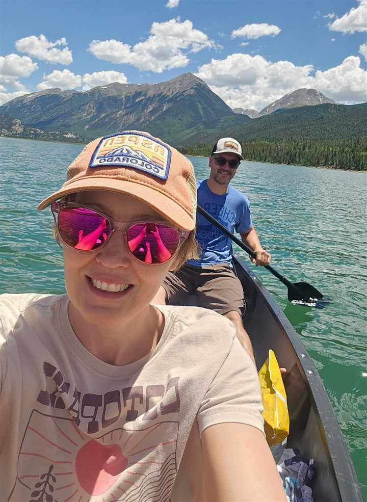

Cheese Louise Theme Song
The official Cheese Louise podcast theme.

Romance, questionable
life decisions, and more.
The songs that make
the Romantiverse.
Spot the tropes.
Play along.
Cocktails for
every movie night.
Join Nick and Jenny for made-for-TV romance, questionable life decisions, and a cocktail along the way.
Hallmark, Lifetime, MarVista, Reel One: we’re exploring the wonderfully predictable world of made-for-TV romance. Expect movie talk, Cheesy Concoctions, games, and a Cheese Grating—the total points from the movie’s recorded tropes.
Episodes and listening links will appear here when the show launches.
Search for a romance movie and get your Bingo card.
Loading movie selections…
Free to play. No account needed.
Love Hallmark-style Christmas movies, Lifetime romances, and small-town happy endings? Start with our romance movie podcast, learn how to play Romantiverse Bingo, or explore the romance movie tropes behind the cards.

Nick and Jenny are the husband and wife duo behind Cheese Louise. From their small mountain town in Colorado, they’re inviting you to join them for craft cocktails and a loving roast of made for TV romance movies.
Together, they pick apart the plots, question the logic, and lovingly roast the ridiculous things that could only happen in the Romantiverse. They both love its tropes, and the crazier they are, the better. Figuring out the peculiar rules, laws, and universal truths that make these movies tick is half the fun.
Pull up a chair, grab a drink, and join them as they unlock the mysteries of the Romantiverse, one trope at a time.
Fill a mug or glass with ice. Add 1½ oz vodka, 3 oz cranberry juice, and ½ oz fresh lime juice. Top with about 3 oz ginger beer, stir gently, and garnish with lime.
Optional twist: use mulling spice infused vodka, or try a little orange or pomegranate. The base recipe uses plain vodka.
See who’s bringing the cheese.
See a classic Romantiverse moment we should add to the Bingo card? Send it our way!
Suggest a Bingo SquareOpens GitHub. Suggestions are public; a GitHub account is required.Outlaw country roots, psychedelic detours, and original songs inspired by the movie you just watched. Meet the sound of the Romantiverse.
The official Cheese Louise podcast theme.
Grit Whimsy